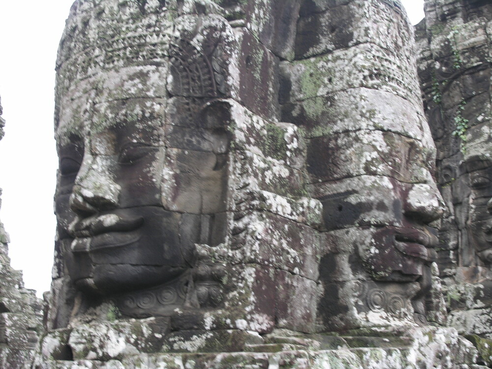
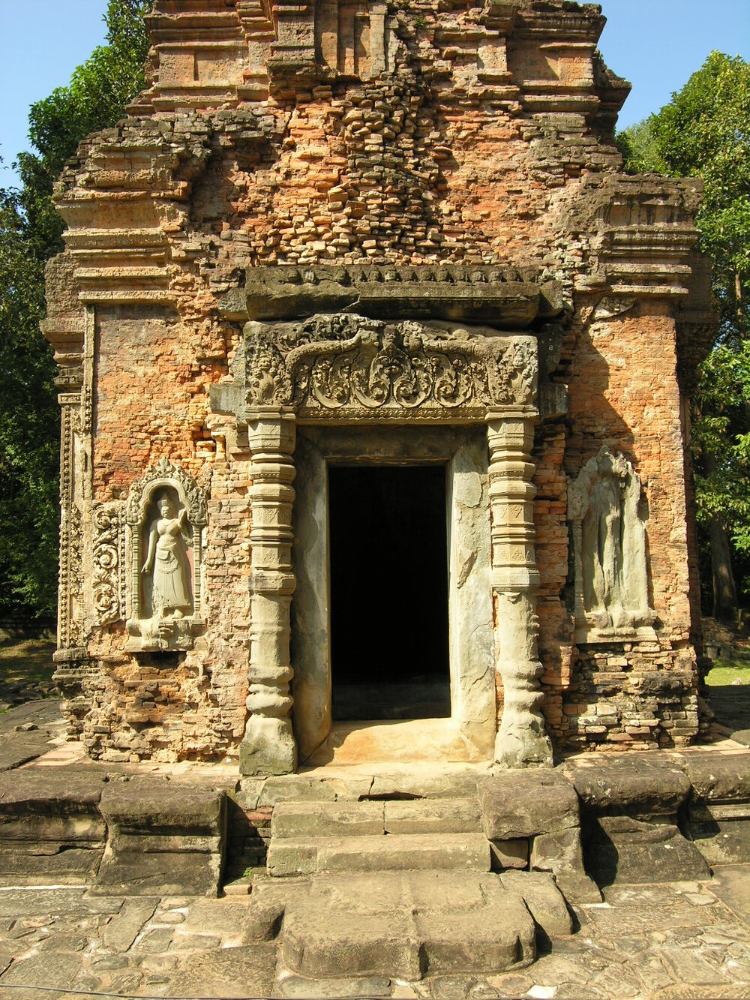
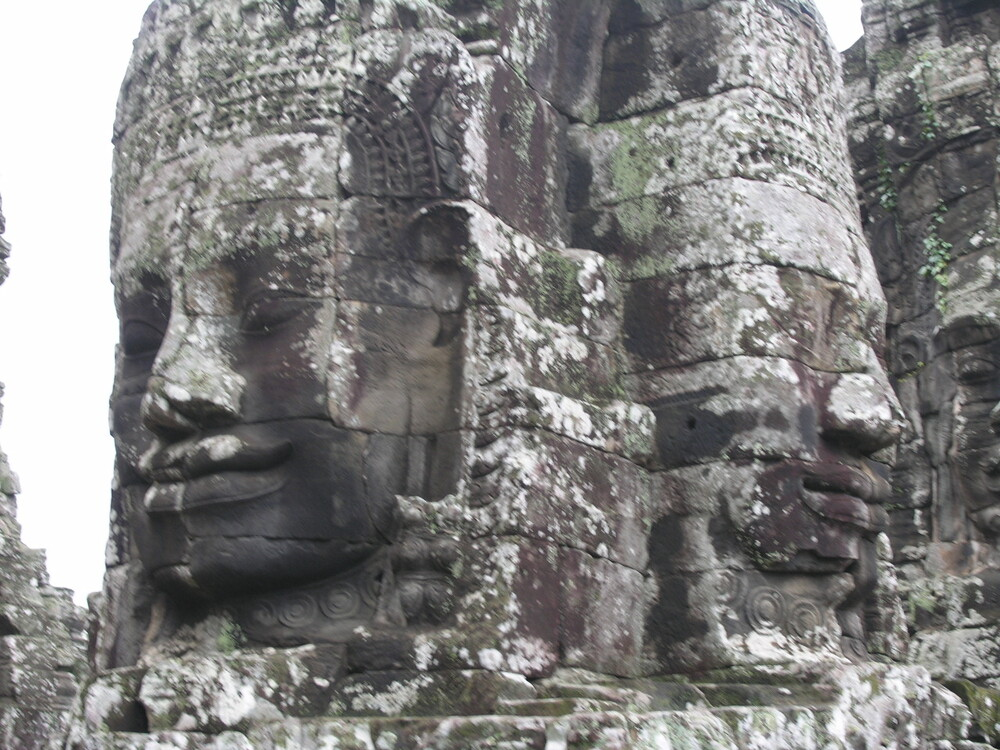
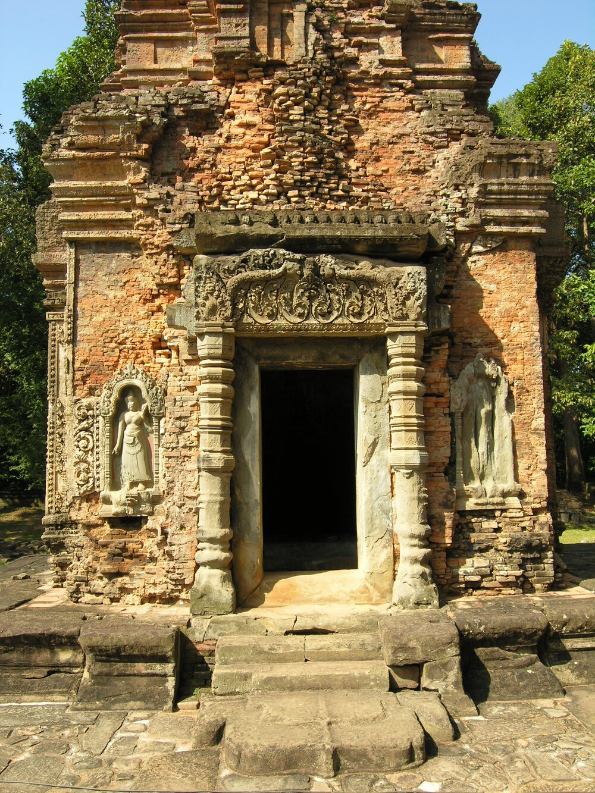

More image

More image
Angkor Wat
Angkor Wat, a majestic temple complex nestled in the heart of Cambodia, stands as a testament to the ingenuity, artistic prowess, and spiritual devotion of the Khmer civilization. Built in the 12th century during the reign of King Suryavarman II, Angkor Wat is not only the largest religious monument in the world but also an enduring symbol of Cambodia's cultural and historical richness.
Historical Context
The construction of Angkor Wat is deeply rooted in the historical and religious context of the Khmer Empire. Established in the 9th century, the empire thrived in Southeast Asia, with Angkor as its capital. King Suryavarman II, inspired by devotion to the Hindu god Vishnu, envisioned Angkor Wat as a monumental temple complex and his state temple. The temple's name, Angkor Wat, translates to "City of Temples" or "Temple City."
Architectural Marvel
Angkor Wat's architectural brilliance is unrivaled. Its design seamlessly blends intricate carvings, colossal towers, and expansive courtyards. The temple covers an impressive 162.6 hectares, with a 5-kilometer perimeter wall and a 190-meter wide moat. The central structure is surrounded by a vast complex of galleries, pavilions, and towers, each intricately adorned with bas-reliefs and carvings depicting Hindu epics, scenes from Khmer history, and celestial beings.
The central tower, symbolizing Mount Meru, the mythical abode of the gods in Hindu cosmology, soars to a height of 65 meters. The temple's alignment with cardinal points, intricate bas-reliefs, and celestial symbolism showcase the profound astronomical and religious knowledge of the Khmer architects.
Religious Significance
Initially dedicated to the Hindu god Vishnu, Angkor Wat later underwent a transformation with the conversion of the Khmer Empire to Theravada Buddhism in the 14th century. This shift in religious allegiance is evident in the addition of Buddhist iconography and the central placement of a massive statue of Buddha. Angkor Wat's spiritual significance extends beyond its religious roots. The temple represents the cosmic universe in Khmer cosmology, reflecting the intricate interplay between the earthly realm and the divine. Pilgrims and worshippers from across the region flocked to Angkor Wat, seeking solace, enlightenment, and divine connection.
Abandonment and Rediscovery
In the centuries that followed its construction, Angkor Wat faced periods of neglect and abandonment. The decline of the Khmer Empire, coupled with changing religious affiliations and environmental challenges, led to the temple's gradual deterioration. Angkor Wat remained largely hidden in the dense Cambodian jungle until the 19th century when French explorers stumbled upon its grandeur. The subsequent restoration efforts, initiated by the French and continued by various international teams, sought to preserve this architectural marvel for future generations.
UNESCO World Heritage Site
Recognizing its unparalleled cultural and historical significance, Angkor Wat was designated as a UNESCO World Heritage Site in 1992. The inscription emphasized the need for sustained conservation efforts to safeguard the temple complex from environmental threats, tourism pressures, and the passage of time.
Tourism and Conservation Challenges
The global recognition of Angkor Wat has transformed it into a major tourist destination, attracting millions of visitors annually. While tourism has brought economic benefits to Cambodia, it also poses challenges to the preservation of the site. Sustainable tourism practices, coupled with vigilant conservation measures, are essential to balance the need for accessibility with the imperative to protect Angkor Wat's delicate structures and intricate carvings.
Conclusion
Angkor Wat, with its timeless allure and cultural significance, remains a living testament to the Khmer civilization's architectural and spiritual achievements. Beyond its awe-inspiring beauty, the temple complex serves as a bridge connecting the past and present, inviting visitors to explore the rich tapestry of Cambodia's history, mythology, and religious evolution. As Angkor Wat continues to stand proudly on the world stage, its preservation becomes not just a responsibility for the Cambodian people but a shared commitment of humanity to safeguard this extraordinary legacy for generations to come.